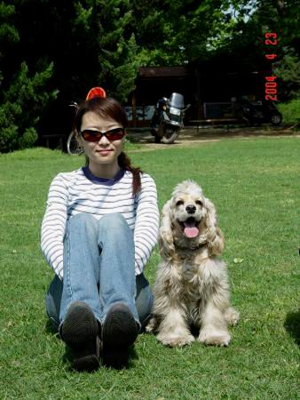

妞妞还在娘胎里时我们就在等待她的到来，两岁零一个月零3天，妞妞就那么不声不响的在7月14日早晨丢失了。在我内心有着不为人知的自责。全天工作的我还尚能应付幼小的它，当它一天天长大需求越来越多时，我们已应付不了对它的所有责任。于是我父母那里成了“托儿所”，每到周末接妞妞回来相聚，我父母也把它当作宝贝来宠。它走丢后一家人这几天心里都不舒服......
14日分发给同事一些带照片的寻狗告示，请他们带回各自居住的地方张贴，当天晚上又和GOGHS大街小巷的贴这些告示，也许这是我们唯一可以做的了。16日晚上居然真的接到一个自称是南京市歌舞团张姐的电话，说妞妞在她那里，不过是演《封神榜》里的那个侏儒捡到的，名字叫陆灯，山东青岛人。当时我便提出去接妞妞，并会酬谢。对方却说当晚要在大桥南路某酒店演出，约我第二天中午在某小区的街心花园碰面。酬谢的方式是要求我抱一下这个侏儒，称此侏儒只有两岁小孩那么高，30岁不到的年纪，喜欢被人抱起来，我当场答应下来。既然是南京市歌舞团的，我说了一个人的名字，张姐连说认识，歌唱的不错，此人同台演出的时候还喜欢抱这个侏儒......电话中标准的普通话和彬彬有礼的说话方式无不让我信服，我的妞妞就要回家了！这是多么令人欢欣雀跃的消息啊~
16日晚，从歌舞团、公安局的朋友那里反馈回来的消息坚定了之前的怀疑。电话是从白下区大阳沟打过来的，歌舞团根本没有陆灯这个人，全南京市登记在档的也就十几个陆deng，其中只有一个与陆灯这个名字相符，却也是正在读大学的正常人。警察朋友说90%是骗子，你要想要你的狗多带几个人去。
17日，抱着一线希望，我们全家以及父亲的朋友在家中等待张姐的电话。一天下来音讯全无。
我们希望妞妞能在一个好人家里生活，如若落在某些人手中必然会让它不停的繁殖，然后卖掉它的孩子去赚钱。妞妞丢了之后，爸爸更不敢多看它的照片，姨娘说到妞妞就流泪，邻居家阿姨见着我说：“多好的狗狗啊，丢了之后我心理好难过。”不想去多想这些难过的怀疑，仍然在等待妞妞的消息，期望它有好运，真的能够被好心人送回来~~
刚出生的妞妞和它的兄弟姐妹们
满月


2个月（右一）


4个月

6个月大

成年



12 Responses to “妞妞丢了~~”
2005-07-18
很漂亮的狗狗，希望它能早点找到家......现在妞妞估计也很想家
2005-07-18
同情ing......
2005-07-19
Good luck ....
2005-07-19
晕死,还有提这种要求的,-_-!!!
2005-07-19
成年狗自己走丢的可能性几乎为零。一般只有两种可能，私奔或者被绑架。前一种情况狗儿过一段时间（几天到几个月不等）会自行回家。后一种情况就比较危险了。Anyway, good luck 2 u and yr Niuniu. She's a lovely dog.
2005-07-19
god bless she
2005-07-19
妞妞不停的繁殖，以后南京城到处都能见到妞妞的子孙。
2005-07-19
搞得我都有点伤感了
2005-07-19
弄不好是被绑票了。那个男的可疑
2005-07-19
希望你能快点找回你的狗，妞妞就像你的家人
2005-07-19
怪不得周末看了好几次你的博客也没有你的新消息。希望你赶紧找到你的妞妞，你也不要太难过，也许它遇到了好心人。
2005-07-20
真心希望妞妞可以回家，再耐心等待下。
Leave A Reply
存档只读，评论已关闭。